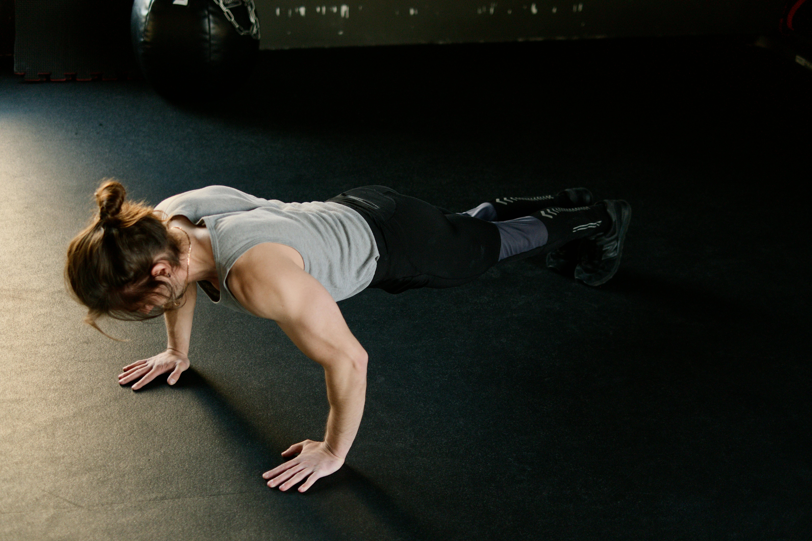
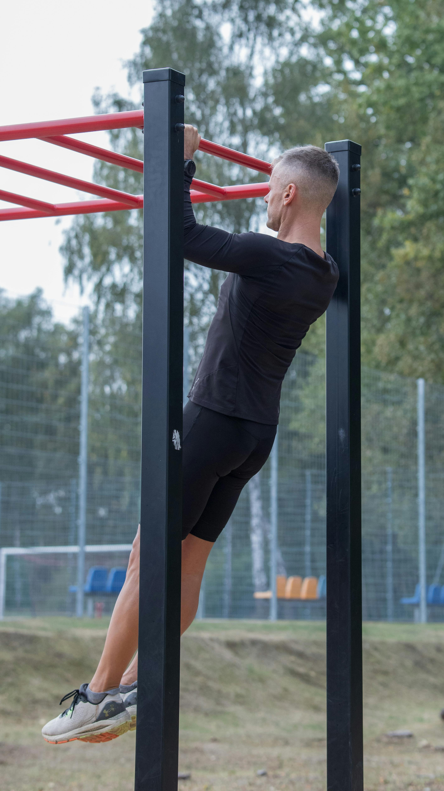
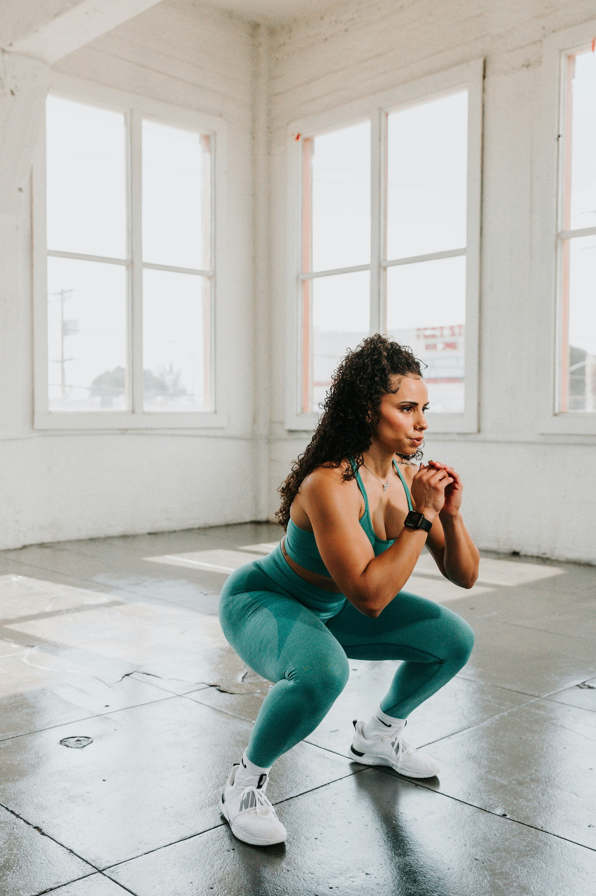
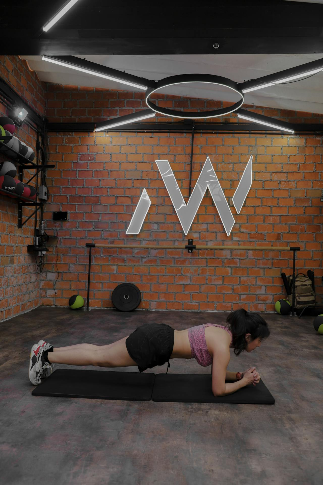

No MaxFit Portal, acreditamos que existem diversas formas de evoluir o corpo e a mente através do treino. Entre as principais estão a musculação e a calistenia, duas modalidades que, apesar de diferentes, têm o mesmo objetivo: melhorar a saúde e a qualidade de vida.
A musculação utiliza pesos e equipamentos, enquanto a calistenia usa o próprio peso corporal. Ambas podem ser combinadas para resultados ainda melhores.
🏋 Musculação e Calistenia 🤸 - MaxFit Portal
Nossa Introdução
Objetivos das Modalidades 🎯
Tanto a musculação quanto a calistenia ajudam no desenvolvimento físico. Veja alguns objetivos em comum:
- Ganho de massa muscular
- Emagrecimento e queima de gordura
- Aumento de força
- Melhora do condicionamento físico
- Prevenções de lesões e problemas de saúde
Tanto a musculação quanto a calistenia ajudam no desenvolvimento físico. Veja alguns objetivos em comum:
- Ganho de massa muscular
- Emagrecimento e queima de gordura
- Aumento de força
- Melhora do condicionamento físico
- Prevenções de lesões e problemas de saúde
Comparação de tipos de treino 📊
| Aspecto | Musculação | Calistenia |
|---|---|---|
| Tipo de carga | Pesos e máquinas | Peso do próprio corpo |
| Local | Academia | Qualquer lugar |
| Foco | Hipertrofia e força | Força, controle corporal |
| Equipamentos | Necessários | Poucos ou nenhum |
| Nivel de dificuldade | Ajustável por carga | Progressão por movimentos |
Recomendações para evoluir ✅
Independente da escolha, algumas práticas são essenciais:
- Ter constância nos treinos
- Manter uma boa alimentação
- Dormir bem e respeitar o descanso
- Executar os movimentos corretamente
- Evoluir aos poucos (progressão)
- Evitar comparações e focar no próprio progresso
Exemplos de Exercícios
Supino

Agachamento

Prancha

Pistol Squat

Execução de exercícios
Treino de hipertrofia
Descrição do Treino
A divisão tradicional do corpo por grupos musculares existe há muito tempo. E existem muitos motivos para isso.
- É evidente que elas atuam na promoção do crescimento muscular.
- Eles foram promovidos por alguns dos melhores atletas do setor.
Rotina de Treino
O treino a seguir deve ser realizado de segunda a sexta-feira. A cada dia você trabalhará um grupo muscular diferente. O objetivo de cada treino é alcançar o pump muscular . Chegue, estimule o músculo, saia e recupere-se. Os períodos de descanso entre os exercícios devem ser limitados a 60-90 segundos, e o descanso entre as séries deve ser limitado a 30-45 segundos. Siga o programa conforme descrito por 10 semanas, aumentando o peso gradualmente quando possível.
Segunda-Feira: Treino de Peito e Abdômen

- Supino Inclinado 4 séries de 6
- Supino Inclinado 4 séries de 8-12
- Supino mecânico 3 séries de 6-12
- Máquina Voadora 3 séries de 12-15
- Flexões 3 séries até Falha
- Trituração da Máquina 3 séries de 15
- Elevação de pernas na barra fixa 3 séries de 12-15
Terça-Feira: Treino de Quadríceps

- Agachamento livre 5 séries de 12
- Leg press 4 séries de 12
- Avanço 4 séries de 10
- Cadeira extensora 4 séries de 12
- Agachamento sumô 4 séries de 10
- Panturrilha 3 séries de 25
Quarta-Feira: Treino de Costas

- Levantamento terra 4 séries de 6
- Puxada na polia alta 4 séries de 8-12
- Remada com halteres 4 séries de 8-12
- Remada na máquina Hammer Strength 4 séries de 10
- Rosca Direta 4 séries de 10
- Rosca Martelo 2 séries de 12
- Rosca 21 unilateral 3 séries
Quinta-Feira: Treino de Glúteos e Posterior de Coxa

- Hip Thrust 4 séries de 8-12
- Stiff (com barra ou halter) 4 séries de 8-12
- Mesa flexora 3 séries de 10-15
- Agachamento búlgaro 3 séries de 8-10
- Cadeira abdutora 3 séries de 12-15
- Glute Kickback (no cabo) 3 séries de 12-15
Sexta-Feira: Treino de Tríceps e Ombro

- Elevação Lateral 4 séries de 8-12
- Crucifixo Invertido 4 séries de 8-12
- Desenvolvimento 3 séries de 10
- Tríceps Mergulho 4 séries de 8-12
- Tríceps na Polia 3 séries de 12
- Tríceps Coice 3 séries de 10
Calistenia
Levantar o dobro do seu peso corporal no levantamento terra? Impressionante. Mas levantar o corpo inteiro contra a gravidade, como ao executar um muscle-up ou segurar uma bandeira humana? Isso é força, controle e atletismo de outro nível. Chama-se calistenia e, embora seja uma forma de treino com o peso do corpo , definitivamente não é nada entediante. Desde posturas que desafiam a gravidade até movimentos explosivos que parecem quase sobre-humanos, a calistenia prova que você não precisa de uma academia cheia de equipamentos para desenvolver força de verdade. Agora, se você já viu alguém fazer um muscle-up, uma flexão de braço em parada de mãos ou uma bandeira humana e pensou: "Eu nunca conseguiria fazer isso", pense novamente. Porque a verdade é esta: todo atleta de alto nível começou com o básico . Ao construir uma base sólida através de movimentos de calistenia para iniciantes, você desenvolverá força, mobilidade e controle em todo o corpo, o que servirá de base para exercícios mais avançados. Se você está entediado com sua rotina atual e pronto para um desafio, treinando em casa com o mínimo de equipamento ou inspirado pela força bruta dos atletas de calistenia, nós temos o que você precisa. Vamos abordar como começar na calistenia , incluindo os melhores exercícios para iniciantes, dicas de treinamento de especialistas do Zach Watson - Personal Trainer e Preparador Físico do Gymshark Lifting Club - e como se aquecer.
O que é calistenia?
O termo calistenia vem das palavras gregas 'Kalos' e 'Stenos', que se traduzem como beleza e força.
Parece sofisticado, mas a premissa deste método de treino é muito simples: a calistenia utiliza
o peso corporal e exercícios de estilo ginástica, usando o peso corporal e a gravidade como resistência [1].
Mesmo que o conceito pareça completamente novo, você provavelmente já se deparou com a calistenia
antes sem nem perceber: flexões na barra fixa, flexões de braço e até abdominais são formas de calistenia,
embora praticantes avançados busquem dominar exercícios como o L-sit, muscle-up, flexão de braço em parada de mãos
e planche, para citar alguns exemplos.
"Você não precisa de muitos equipamentos para fazer calistenia.
Você pode fazer seu treino de calistenia em casa, no parque ou na academia perto de casa",
explica Zach. "É ótimo ter uma barra fixa e uma parede livre, mas você não precisa de máquinas.
Você pode usar apenas uma faixa elástica para ajudar nos exercícios."
6 exercícios de calistenia para iniciantes que você precisa experimentar.
Não espere conseguir fazer flexões de braço em parada de mãos na barra fixa logo de cara. Se você está começando na calistenia, é fundamental dominar o básico primeiro. Estes exercícios de calistenia para iniciantes focam em quatro áreas:
- força de empurrão
- força de tração
- força da parte inferior do corpo
- Força central
1. Flexões

Um dos melhores exercícios com peso corporal, a flexão de braço desenvolve força no peito, ombros e tríceps, e ativa intensamente o core e, em menor grau, os glúteos e as pernas. Mesmo sendo um exercício com peso corporal, as flexões de braço desenvolvem tamanho e força muscular comparáveis ao supino realizado com 40% de 1RM (repetição máxima) [2]. Elas também ensinam estabilização e controle corporal completos, uma habilidade essencial para todos os movimentos de calistenia, principalmente à medida que se tornam mais avançados.
2. Puxada na barra fixa

As flexões de braço na barra fixa utilizam o peso corporal para desenvolver força essencial de empurrar, estabilidade articular e controle. Trabalhando o peito, os ombros e os tríceps, as puxadas na barra fixa constroem músculos fortes que são muito utilizados em exercícios de calistenia, como muscle-ups e planche. As puxadas na barra fixa também são um movimento fundamental para a execução de exercícios de calistenia mais avançados, como muscle-ups, front lever e flexões de braço em parada de mãos, ensinando o controle de empurrar a partir de uma posição profunda, portanto, dominar esses movimentos é essencial se você pretende praticá-los!
3. Barra australiana

Também conhecido como remada com o corpo, o exercício de remada invertida desenvolve força de tração horizontal, essencial para exercícios de calistenia mais avançados [4]. Trabalhando a parte superior das costas, dorsais, bíceps e core, é um excelente exercício para desenvolver força para barras fixas Alterar a altura e o ângulo do corpo em relação à barra modifica a dificuldade do exercício. Uma barra mais alta leva a uma posição corporal mais ereta, facilitando o exercício, enquanto uma barra mais baixa e uma posição corporal mais vertical o tornam mais difícil.
4. Parada de mão

Se você não está acostumado a ficar de cabeça para baixo, logo se adaptará à sensação depois de praticar algumas paradas de mão. Não se preocupe, elas não precisam ser feitas sem apoio: praticar paradas de mão contra a parede ajudará você a desenvolver a consciência corporal e o controle necessários para sustentar o peso do corpo com as mãos. Elas também fortalecem os pulsos, ombros, trapézios, tríceps e abdômen.
5. Agachamento com o peso do corpo

Apostamos que você já conhece esses exercícios, mas sem eles, não seria um treino de calistenia para iniciantes! O agachamento com o peso do corpo é fundamental na calistenia, servindo de base para todos os exercícios de perna. Por isso, é importante dedicar tempo para dominar o agachamento com o peso do corpo, executando-o com boa forma e profundidade. Se você quer conseguir fazer agachamentos cossacos ou agachamentos pistol, primeiro precisa dominar os fundamentos do agachamento com o peso do corpo.
6. Prancha

O último pilar de qualquer treino de calistenia para iniciantes é a força do core , que é a base para quase todos os movimentos de calistenia. Um core forte ajuda na estabilidade e controle, equilíbrio e coordenação e transferência eficiente de energia entre a parte superior e inferior do corpo. A prancha é um ótimo exercício para desenvolver força e equilíbrio fundamentais no core. As pranchas trabalham os músculos profundos do core, essenciais para a estabilidade e o controle em praticamente todos os movimentos de calistenia — desde flexões até paradas de mão. Elas também ensinam como "contrair" o core corretamente e desenvolver o alinhamento adequado.
Links para mais informações 🌐
Conclusão
Não existe uma modalidade melhor que a outra — existe aquela que melhor se adapta a você. A musculação e a calistenia podem, inclusive, ser combinadas para gerar resultados ainda mais completos.
O mais importante é começar, manter a disciplina e nunca desistir da evolução.